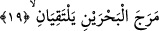

dumansız ateş suretinde celal ve kahırla tecellî etti. Bu sebeple biri lütfuna, diğeri de
kahrına mazhar oldu. Öyleyse Rabbinizin nimetlerinden hangisini yalanlayabilirsiniz?
Ey latif ruh ve habis/kötü nefis! Çünkü ikiniz de üzerinde yaratılmış olduğu tabîatının
gereği olarak lütuf ve kahrı, iyilik ve kötülüğü tatmış bulunuyorsunuz.
17. (O,) iki doğunun ve iki batının Rabbidir.
Bu âyet-i kerîme, hazf edilmiş mübtedanın haberidir. Yâni sayılan bu güzellikte eşsiz
işleri yaratan, yazın ve kışın, doğunun ve batının, her ikisinin de Rabbidir. Bunun
kaçınılmaz bir gereğidir ki, iki doğunun ve batının arasındaki bütün varlıkların da kesin
olarak Rabbidir. Yâni doğu ve batının en yüksek ve en aşağı sınırlarını zikretmek,
aralarındaki her şeyi içine alıp kuşattıklarına işâret eder. Ülkesi çok büyük olan bir
hükümdarı anlatırken, “doğu ve batı onundur” dediğinde aralarındaki her şeyin de ona
âid olduğu anlaşılır.
Keşfü’l-esrâr’da denilmiştir ki; iki doğudan biri, yılın en uzun gününde güneşin
doğduğu yerdir. Diğeri de yılın en kısa gününde güneşin doğduğu yer olup aralarında
yüz seksen maşrik/doğu daha vardır. İki batı da aynı şekilde açıklanır.
Bazı müfessirler de, iki doğudan birinin güneş, diğerinin ay için, iki batıdan birinin
güneş, diğerinin de ay için olduğunu söylemişlerdir.
İbn Abbâs (r.a.), doğuda bulunanlar için doğu ile batı arasında kıble vardır. Bu da
yazın batısını sağ tarafına, kışın doğusunu soluna alırsan kıbleye dönmüş olursun,
denmiştir.
18. Öyleyse Rabbinizin hangi nimetlerini yalanlayabilirsiniz?
Doğu ve batıyı yaratmış olmasında, havanın mûtedil olmasında, mevsimlerin
değişmesinde, her mevsime uygun şeylerin vaktinde meydana gelmesinde sayısız
faydalar vardır.
19. İki denizi birbirine kavuşmak üzere salıvermiştir.
Yâni, tuzlu denizle tatlı denizi birbirine kavuşacak şekilde saldı. Biri tatlı ve hoş,